Two pilots on one world
The mode is called an MMORPG and had only ever been played by one human at a time. That was the first task on the milestone 10 list, and it came in two merges today: the core simulation learned to drive several pilots in one region, and then two game clients on one local server checked each other, from both sides, with one of them under 150 ms of lag and 5% loss.
The core
Since the first milestone the core simulation drove exactly one pilot per region. The pilot's context, its progress, its skill effects, its own buildings, its headlamp and its circle of daylight, sat in one place, and a second human in a region where someone else drove could not drive at all. The morning's merge keeps the active driver's context where it was and holds each other human's beside it; the step swaps each in for its own unit's turn, its levelling and its skills, every AI and commander check counts all the driven units, and the vision gives each its own headlamp and daylight. The single-player strategy game has no other drivers, so its golden tests are untouched, and nothing changed on the wire or in the save. Seventeen files, 572 lines in and 119 out.
The two clients
The afternoon's merge is the check. A new tool runs two games and the world server under the one hidden-run slot, the second game through the lag simulator at 150 ms each way and 5% loss, and takes pictures from both. What each saw: the other's Prospector in the realm's blue with its callsign over it, and the tag hidden when a building is in the way. One pilot starting the Beacon, the other getting the toast and seeing the project running on its own REALM tab with the halved fare. One pilot's Hab Dome rising on the other's screen, the deed toast naming who built it, the map tooltip saying the same. Unloading at the other's Dome, with the tax landing in the realm wallet on both screens. The Dropship seen from the ground: coming down, the other pilot walking aboard, lifting off. The Fork's first wave fought by both and each paid its share by the damage it did, 40 ore to one and 20 to the other. And one pilot leaving during the siege and coming back where it left, with its wallet.
Each pilot keeps its own wallet in a shared region now; a region's bank had been shared by its humans. Two more things were wrong and are fixed. A game closing under lag never sent its goodbye, so the other fought alone for the 10 seconds the server waits before letting a silent pilot go. And a flight between Landing Pads that share a building id, since ids count per region, was refused as "At Landing Pad 1 already". Protocol 34. The suites stand at 505, 99 and 336.
What a second human needs
A second game with a folder of its own, so it gets a pilot key of its own, and the share file the first game writes: the port, a one-time token and the server's control file. The second game joins with that file. Both are flags on the command line for now, in the play doc. Not yet: two Macs on a network, since the server binds to the local address only; telling who is who, since both humans wear the same blue and only the tag tells them apart; a chat or a party. Those are the long game.
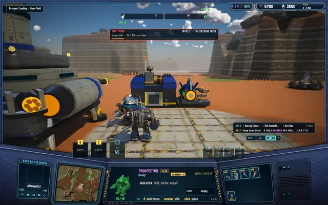
A sees B at the Citadel, tagged PILOT 2B96.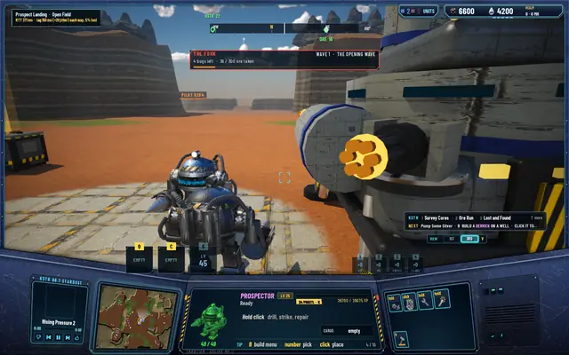
B sees A, through 150 ms each way and 5% loss.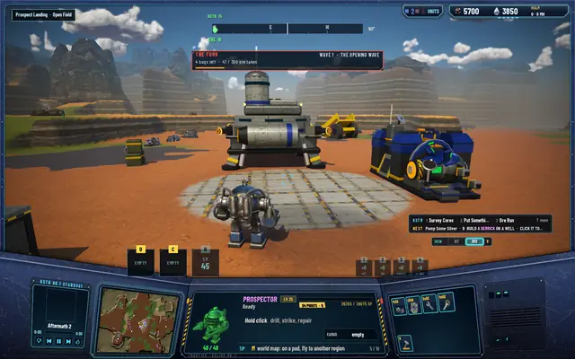
A tag shows only when nothing is in the way: B is behind the Citadel.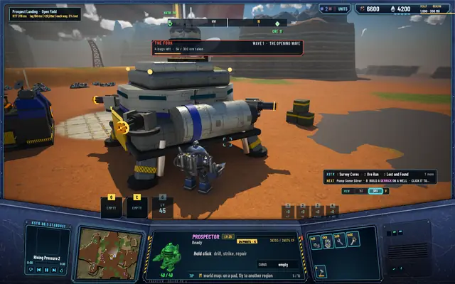
A starts the Beacon; B gets the toast, naming who started it.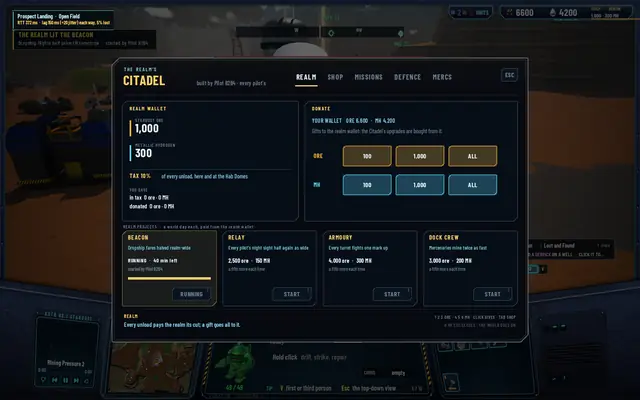
B's REALM tab: the Beacon running, started by the other pilot.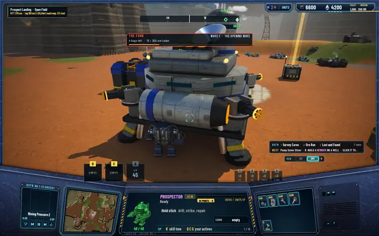
A's Hab Dome rising on B's screen.- The deed toast: PILOT B2B4 BUILT A HAB DOME.
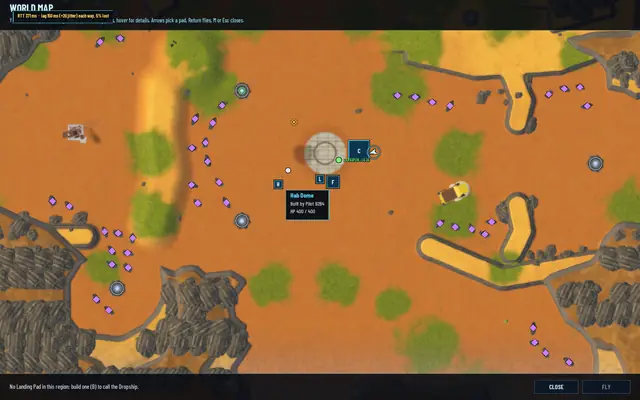
The map's tooltip says who built it.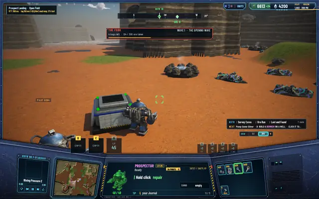
B unloads at A's Dome: 24 ore to B, 3 to the realm.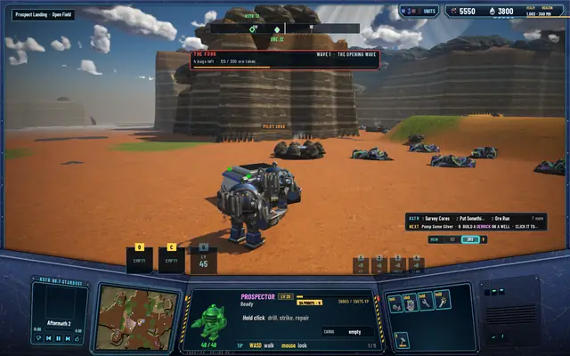
A sees the realm wallet go up by the same 3 ore.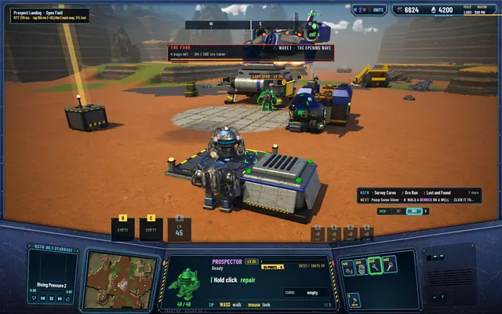
A calls the Dropship; B watches it come down.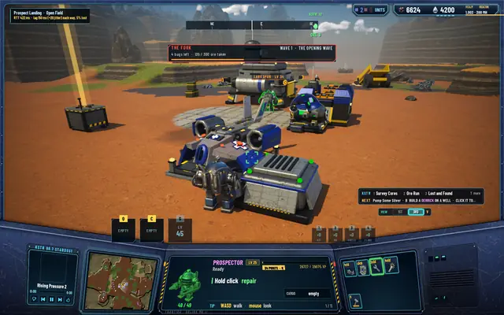
A walks aboard, seen by B.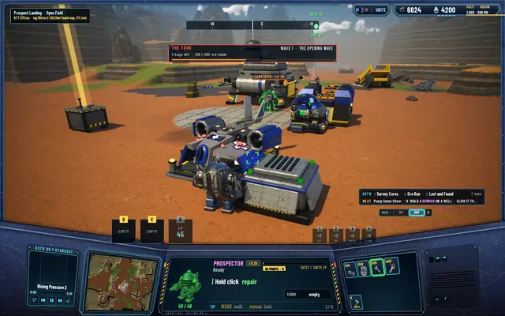
Lift off; the tag is gone while A is aboard.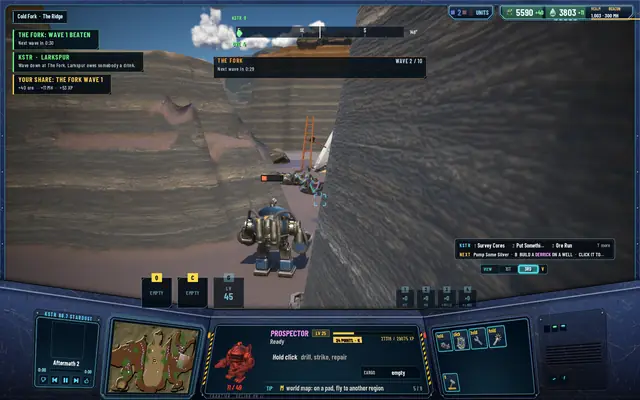
The Fork's first wave beaten: A's share, 40 ore, 11 MH, 53 XP.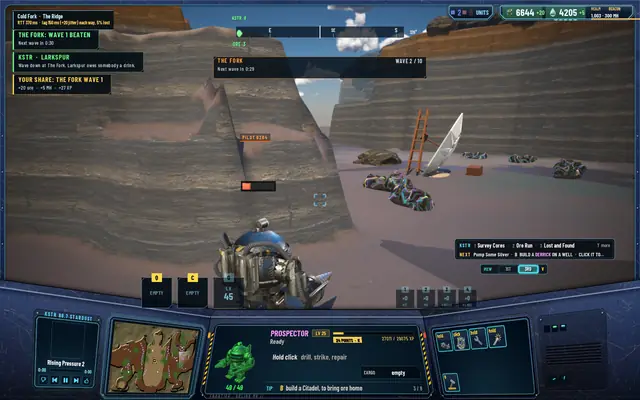
B's share of the same wave: 20 ore, 5 MH, 27 XP, by the damage done.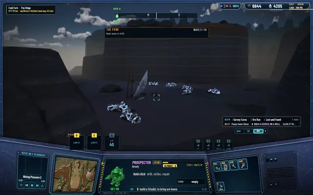
B leaves during the siege and comes back where it left, with its wallet.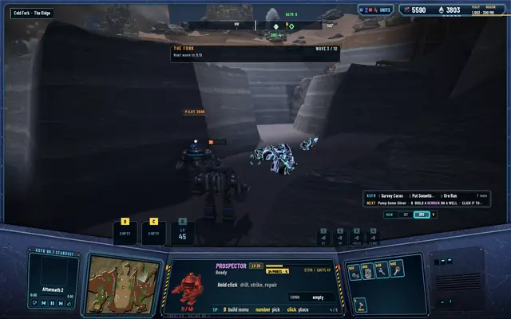
A sees B back.